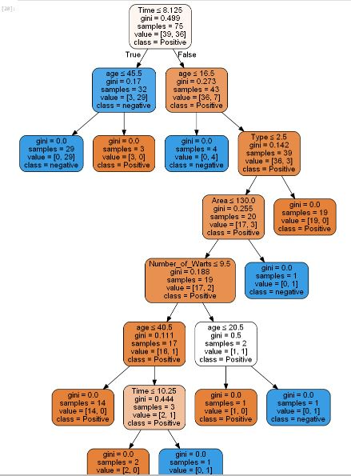

Decision Tree Classifier (Gain)¶
Secara singkat bahwa Decision Tree merupakan salah satu metode klasifikasi pada Text Mining. Klasifikasi adalah proses menemukan kumpulan pola atau fungsi-fungsi yang mendeskripsikan dan memisahkan kelas data satu dengan lainnya, untuk dapat digunakan untuk memprediksi data yang belum memiliki kelas data tertentu (Jianwei Han, 2001).
Decision Tree adalah sebuah struktur pohon, dimana setiap node pohon merepresentasikan atribut yang telah diuji, setiap cabang merupakan suatu pembagian hasil uji, dan node daun (leaf) merepresentasikan kelompok kelas tertentu. Level node teratas dari sebuah Decision Tree adalah node akar (root) yang biasanya berupa atribut yang paling memiliki pengaruh terbesar pada suatu kelas tertentu. Pada umumnya Decision Tree melakukan strategi pencarian secara top-down untuk solusinya. Pada proses mengklasifikasi data yang tidak diketahui, nilai atribut akan diuji dengan cara melacak jalur dari node akar (root) sampai node akhir (daun) dan kemudian akan diprediksi kelas yang dimiliki oleh suatu data baru tertentu.
Kelebihan lain dari metode ini adalah mampu mengeliminasi perhitungan atau data-data yang kiranya tidak diperlukan. Sebab, sampel yang ada biasanya hanya diuji berdasarkan kriteria atau kelas tertentu saja.
Meski memiliki banyak kelebihan, namun bukan berarti metode ini tidak memiliki kekurangan. Decision tree ini bisa terjadi overlap, terutama ketika kelas dan kriteria yang digunakan sangat banyak tentu saja dapat meningkatkan waktu pengambilan keputusan sesuai dengan jumlah memori yang dibutuhkan.
Dalam hal akumulasi, decision tree juga seringkali mengalami kendala eror terutama dalam jumlah besar. Selain itu, terdapat pula kesulitan dalam mendesain decision tree yang optimal. Apalagi mengingat kualitas keputusan yang didapatkan dari metode decision tree sangat tergantung pada bagaimana pohon tersebut didesain.
Terlepas dari kekurangan dan kelebihan dari decision tree, metode ini banyak digunakan lebih lanjut dalam berbagai pengolahan data. Mulai dari data mining dan juga machine learning. Dalam dunia kerja, decision tree sendiri sangat berguna untuk penilaian credit scoring. Jika anda pernah mengajukan kredit yang diproses secara instan, nah anda sudah mempunyai pengalaman dari decision tree.
Struktur dan Algoritma Dasar Pembelajaran Pohon Keputusan¶
Pada pohon keputusan terdapat tiga jenis node, antara lain :
1. Akar Merupakan node teratas, pada node ini tidak ada input dan dapat tidak mempunyai output atau dapat mempunyai output lebih dari satu. 2. Internal node Merupakan node percabangan, pada node ini hanya terdapat satu input dan mempunyai output minimal dua. 3. Daun Merupakan node akhir atau terminal node, pada node ini hanya terdapat satu input dan tidak mempunyai output (simpul terminal).
Kebanyakan algoritma untuk pembelajaran pohon keputusan adalah variasi dari algoritma intinya yang menggunakan pencarian rakus (greedy) dari atas ke bawah terhadap ruang kemungkinan pohon keputusan. Salah satu algoritmanya yaitu ID3. Langkah-langkah yang dilakukan yaitu,
- Tentukan atribut terbaik untuk root dari tree. Setiap instan dari atribut dievaluasi menggunakan sebuah tes statistik untuk menentukan seberapa bagus atribut tersebut mengklasifikasi sampel latihan.
- Turunan dari node root dibuat untuk setiap kemungkinan nilai dari atribut
- Sampel latihan kemudian diurutkan berdasarkan node turunan.
- Seluruh proses kemudian diulang menggunakan sampel latihan yang berhubungan dengan setiap node turunan untuk menentukan atribut terbaik untuk dites di pohon.
Entropy & Information Gain¶
Algoritma pada metode ini menggunakan konsep dari entropi. Konsep Entropi yang digunakan untuk mengukur “seberapa informatifnya” sebuah node (yang biasanya disebut seberapa baiknya).
Entropi(S) = 0, jika semua contoh pada S berada dalam kelas yang sama. Entroiy(S) = 1, jika jumlah contoh positif dan jumlah contoh negatif dalam S adalah sama. 0 < Entropi(S) < 1, jika jumlah contoh positif dan negatif dalam S tidak sama.

Dimana: • S adalah himpunan (dataset) kasus • k adalah banyaknya partisi S • pj adalah probabilitas yang di dapat dari Sum(Ya) dibagi Total Kasus.
Setelah mendapat nilai entropi, pemilihan atribut dilakukan dengan nilai information gain terbesar.

Implementasi Program Menggunakan Perhitungan Entropy¶
- Import Library
import pandas as pd from sklearn.tree import DecisionTreeClassifier from sklearn import model_selection from sklearn import metrics from sklearn.model_selection import train_test_split from sklearn.tree import export_graphviz from sklearn.externals.six import StringIO import pydotplus from IPython.display import Image
- Load dataset
#memuat file excel
df=pd.read_excel('Cryotherapy.xlsx')
#menampilkan data
print("Informasi Data\n")
print("Jumlah Data : ", len(df))
print ("Dimensi Data : ",df.shape)
print ("Dataset :")
print(df.head())
print('\n')
- Memilah data
jika data sudah sukses terimport, selanjutnya kita akan memilah data ke beberapa bagian seperti data yang akan d jadikan testing, training, dan yang akan dijadikan classnya. di sini saya menggunakan 15 data untuk testingnya dan data kolom terakhir sebagai classnya. berikut kodenya :
#splitting dataset ke training dan testing train, test = train_test_split(df, test_size = 0.1,random_state=1234) #mencari hasil print(train.shape) print(test.shape) # Dataset validasi dataset array = df.values X = array[:,1:6] Y = array[:,6] validation_size = 15 seed = 7 X_train, X_validation, Y_train, Y_validation = model_selection.train_test_split(X, Y, test_size=validation_size, random_state=seed)
- Tampil Hasil Pemilahan Data
#mencari hasil print(X_train.shape) print(Y_train.shape) print(X_validation.shape) print(Y_validation.shape)
- Prediksi Data Menggunakan Library scikit lear metode Decision Tree Entropy
entropy= DecisionTreeClassifier(criterion="entropy",random_state=1234)
#learning
entropy.fit(X_train,Y_train)
#Prediksi
prediction=entropy.predict(X_validation)
#mengevaluasi(Accuracy)
print("Accuracy:",metrics.accuracy_score(prediction,Y_validation))
#evaluation(Confusion Metrix)
print("Confusion Metrix:\n",metrics.confusion_matrix(prediction,Y_validation))
- Menampilkan Pohon Data
feature_cols=['age','Time','Number_of_Warts' ,'Type' , 'Area']
dot_data = StringIO()
export_graphviz(entropy, out_file=dot_data,
filled=True, rounded=True,
special_characters=True,feature_names = feature_cols,class_names=['Positive','negative'])
graph = pydotplus.graph_from_dot_data(dot_data.getvalue())
graph.write_png('entropy.png')
Image(graph.create_png())
- Menampilkan Hasil Prediksi Data Entropy
print("Hasil prediksi menggunakan entropy")
#Membentuk kembali diperlukan untuk melakukan penggabungan
pred_clf_df = pd.DataFrame(prediction.reshape(15,1))
#Ganti nama kolom untuk menunjukkan prediksi
pred_clf_df.rename(columns={0:'Prediction'}, inplace=True)
#membentuk kembali dataset uji
X_validation_df = pd.DataFrame(X_validation.reshape(15 ,5))
#menggabungkan dua bingkai data panda di atas kolom untuk membuat dataset prediksi
pred_outcome = pd.concat([X_validation_df, pred_clf_df], axis=1, join_axes=[X_validation_df.index])
pred_outcome.rename(columns = {0:'age',1:'Time',2:'Number_of_Warts' ,3:'Type' ,4: 'Area'}, inplace=True)
#cetak 10 baris prediksi akhir
print((pred_outcome).head(15))
print ("\n")
#mengevaluasi(Accuracy)
print("Accuracy:",metrics.accuracy_score(prediction,Y_validation))
Prediksi Data Menggunakan Library scikit learn metode Decision Tree Gini¶
- Kemudian kita coba menggunakan metode perhitungan gini. Adapun caranya sama seperti decision tree. yang membedakannya adalah criterionnya. kita tinggal mengubahnya menjadi gini.
gini= DecisionTreeClassifier(criterion="gini",random_state=1234)
#learning
gini.fit(X_train,Y_train)
#Prediksi
prediction_gini=gini.predict(X_validation)
#mengevaluasi(Accuracy)
print("Accuracy:",metrics.accuracy_score(prediction_gini,Y_validation))
#evaluation(Confusion Metrix)
print("Confusion Metrix:\n",metrics.confusion_matrix(prediction_gini,Y_validation))
- Menampilkan Pohon Data
feature_cols=['age','Time','Number_of_Warts' ,'Type' , 'Area']
dot_data = StringIO()
export_graphviz(gini, out_file=dot_data,
filled=True, rounded=True,
special_characters=True,feature_names = feature_cols,class_names=['Positive','negative'])
graph = pydotplus.graph_from_dot_data(dot_data.getvalue())
graph.write_png('gini.png')
Image(graph.create_png())

- Menampilkan Hasil Prediksi Data Gini
print("Hasil prediksi menngunakan gini")
#Membentuk kembali diperlukan untuk melakukan penggabungan
pred_clf_df = pd.DataFrame(prediction.reshape(15,1))
#Ganti nama kolom untuk menunjukkan prediksi
pred_clf_df.rename(columns={0:'Prediction'}, inplace=True)
#membentuk kembali dataset uji
X_validation_df = pd.DataFrame(X_validation.reshape(15 ,5))
#menggabungkan dua bingkai data panda di atas kolom untuk membuat dataset prediksi
pred_outcome = pd.concat([X_validation_df, pred_clf_df], axis=1, join_axes=[X_validation_df.index])
pred_outcome.rename(columns = {0:'age',1:'Time',2:'Number_of_Warts' ,3:'Type' ,4: 'Area'}, inplace=True)
#cetak 10 baris prediksi akhir
print((pred_outcome).head(15))
print ("\n")
#mengevaluasi(Accuracy)
print("Accuracy:",metrics.accuracy_score(prediction_gini,Y_validation))
Kesimpulannya hasil perhitungan entropy dan gini hampir sama, namun tingkat akurasi perhitungan entropy lebih akurat dengan akurasi 0.93 sedangkan perhitungan gini akurasinya 0.86
Referensi
https://medium.com/@mimubarok.mim/decision-tree-pohon-keputusan-6484ad30c289
https://medium.com/iykra/mengenal-decision-tree-dan-manfaatnya-b98cf3cf6a8d
http://dyan123.blogspot.com/2012/03/pengertian-decision-tree.html